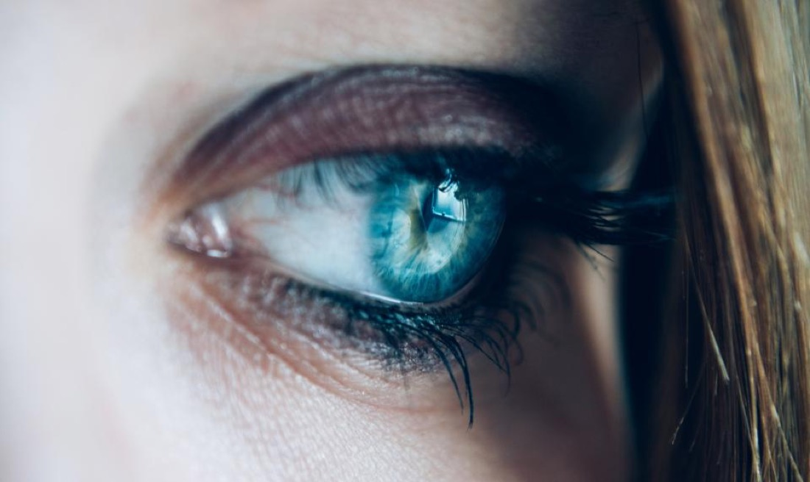

"He's the doctor the doctors trust. You should too."
Misdiagnosed by two other doctors, a radiologist friend sent me to Dr. Dennis. He immediately saw the problem and I was well in less than a week.
Nora Quinn · Local Guide
Clear Vision Eye Center · Est. 1983
Checking hours…Board-certified ophthalmology and small-incision cataract surgery from Dennis A. Chuck, M.D. One practice for your whole family, from eyeglasses to eye surgery.

An eye exam in progress · 1774 Alameda St, Pomona
Est. 1983
40 years
of care · Pomona
(About the practice)
Led by licensed and certified ophthalmologist Dennis A. Chuck, M.D., Clear Vision Eye Center has cared for Pomona's eyes since 1983. We are a true one-stop shop, providing everything from a routine eye exam and a new pair of glasses to advanced small-incision cataract surgery, all under one roof.
Dr. Chuck is known for exceptional surgical results, but just as much for a caring, personal approach. You are a person here, not a chart number.
Meet Dr. Chuck0+
Years caring for Pomona
~0
Minute outpatient surgery
0 mm
Micro-incision, or less
0%
Outpatient · home the same day
(What we do)
From the front desk to the operating microscope, every service is delivered by the same surgeon who has done it thousands of times.
Read about each service in detailQuality assessment from a qualified, practicing eye surgeon, using the latest technology to evaluate and protect your sight.
Small-incision phacoemulsification with a foldable lens implant, chosen to correct nearsightedness, farsightedness, astigmatism, and presbyopia.
A one-stop optical center. We monitor your eye health and performance, then fit you with the best glasses and contact lenses for your prescription.
Thorough exams that track your vision and eye health over time, catching changes early and keeping your prescription current.
Surgical lens implants that can reduce or eliminate the need for glasses and contacts, tailored to your vision goals.
Detection and ongoing management of glaucoma to protect your long-term sight, with surgical correction when it is needed.
(Conditions we treat)
If your vision has changed, there is usually a name for it, and a way to correct it. Run your eye down the list and bring each one into focus.
Clouded lens
A clouding of the eye's natural lens, corrected by replacing it with a clear implant.
Optic-nerve pressure
Pressure that can quietly damage sight. Caught early, it is managed medically or surgically.
Aging focus
Around age 40 the lens stiffens and near focus fades. Lenses and implants bring it back.
Irregular contour
An uneven corneal curve that blurs vision at every distance, correctable in surgery or glasses.
Myopia · distance blur
Far-away detail softens. We correct it with eyewear or a tailored lens implant.
Hyperopia · near blur
Close work becomes a strain. The right correction makes reading effortless again.
Hover a name to bring it into focus · tap to ask Dr. Chuck
(Correcting cloudiness)
A cataract is the clouding of the lens inside your eye. Early on it feels "as if you are looking through a dirty window." Drag the handle to see how surgery trades that haze for clarity.
← Cataract vision · After surgery →

(What to expect)
Most people are surprised by how calm and quick it is. Here is what your morning looks like, in plain terms.
You relax in a reclining chair. A few numbing drops, no needles at all, and a little something to help you unwind.
Through an incision smaller than three millimeters, the clouded lens is gently softened with sound waves.
Dr. Chuck removes the clouded lens while leaving its delicate, clear membrane in place to cradle the new one.
A soft, folded lens slides into the same opening and gently unfolds, becoming your new lens for good.
Afterward, recovery is quick. There is usually little more than mild discomfort, you wear a light shield for a day or two, and most people are back to their routine within days, with vision that keeps sharpening over the following weeks.
Ask Dr. Chuck about cataract surgery
Dennis A. Chuck, M.D.
Ophthalmologist & Eye Surgeon
(Meet your doctor)
An eye surgeon since 1983, Dr. Chuck has performed thousands of cataract and refractive procedures. He trained in ophthalmology at the USC Doheny Eye Institute, where he still serves as a Clinical Instructor, and specializes in small-incision cataract surgery.
"I am proud to be known for exceptional surgical results, but it is also important to me to be known as a surgeon with a caring and personalized approach to patient care."
Dennis A. Chuck, M.D.
Education & training
Credentials & honors

(The people)
From your first call to your fitting at the optical counter, the same familiar faces look after your whole family's eyes.
Meet the team(In their words)
(Good to know)
Still wondering about something? Call (909) 622-1188 and we will talk it through.
When cloudiness begins to limit your daily activities, the recommended treatment is to remove the clouded lens and replace it with a clear implant. There is no proven non-surgical cure, but surgery is elective: Dr. Chuck will examine your eyes and help you decide when, or whether, the time is right.
The surgery itself typically takes about 15 minutes. It is an outpatient procedure performed under an operating microscope, with topical anesthesia (no needles) and light IV sedation for your comfort.
Most patients feel minimal discomfort. You will wear a light protective shield and use prescribed eye drops, and most people return to normal activities within days. Vision improves soon after surgery and continues to sharpen over several weeks.
The foldable lens implant is selected to correct nearsightedness, farsightedness, astigmatism, or presbyopia, so many patients greatly reduce their dependence on glasses. Dr. Chuck will walk you through the lens options that fit your eyes and your lifestyle.
Bring your current glasses or contact lenses, a list of any medications you take, and your insurance information. If you have records from a previous eye doctor, those are helpful too.
We work with many vision and medical plans. The fastest way to confirm your specific coverage is to call us at (909) 622-1188, and our front desk will check it for you before your appointment.
(Get in touch)
Call us or send a request and we'll help you find a time. We're happy to talk through exams, eyewear, or cataract surgery.
Mon – Fri
8:00 – 5:00
Lunch 12:30 – 1:30
Sat / Sun
By request
Call to arrange
Request sent.
Thank you. We've received your request and will reach out by your preferred method, usually within one business day. Need us sooner? Call (909) 622-1188.
Let's connect another way.
We couldn't send that automatically just now. Email us directly or give us a call, we'd love to help.